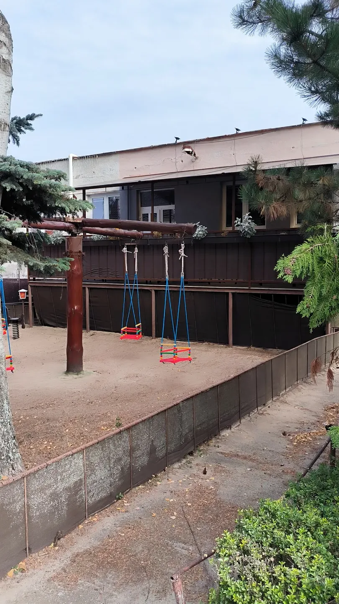

Hostinec a slovenská reštaurácia v meste Šaštín-Stráže
Hostinec Steip
Obedové menu každý pracovný deň od 11:00 do 14:00 a rozvoz obedov po Šaštíne-Strážach a okolí. Pozrite si náš jedálny lístok.
- Pondelok
- 11:00 - 14:30
- Utorok
- 11:00 - 14:30, 17:00 - 21:00
- Streda - Štvrtok
- 11:00 - 14:30
- Piatok
- 11:00 - 14:30, 16:00 - 24:00
- Sobota
- 16:00 - 24:00
- Nedeľa
- 16:00 - 20:00


- Lístok s cenami31 jedál v 7 kategóriách
- Jedlá od 6,20 €ceny priamo na webe
- Rezervácia stolaonline alebo telefonicky
- Alergény pri jedláchpodľa nariadenia EÚ 1169/2011
- Lístok na tlačPDF na stiahnutie
Z našej ponuky
Vybrané jedlá z jedálneho lístka s cenami.
-
Čapujeme
Pivo POUTNÍK svetlý ležiak 12
0,5 l
1,50 €Do lístka -
Polievky
Hrášková krémová s krutónmi
0,33 l · alergény 1, 7
2,20 €Do lístka -
Menu jedlá
Hovädzí guláš, knedľa
130 g · alergény 1, 3, 7
6,40 €Do lístka -
Extra menu
Vyprážané kuracie stripsy, zemiakové hranolky, omáčka
Omáčka cesnaková, burgrová, barbeque alebo tatárska.
150 g · alergény 1, 3, 7
7,00 €Do lístka -
Jedlá na objednávku
Palacinka s džemom alebo s nutelou, šľahačkou a čokoládou
80 g · alergény 1, 3, 7, 8
1,50 €Do lístka -
Rozvoz jedál
Dovoz mimo Šaštín-Stráže
0,50 €Do lístka
Jedálny lístok
Ceny, gramáže a alergény. Jedlá od 6,20 €.
- Pivo POUTNÍK svetlý ležiak 121,50 €
0,5 l
- KOFOLA originál1,50 €
0,5 l
- TOP TOPIC mango, malina1,50 €
0,5 l
- Hovädzí guláš, knedľa6,40 €
130 g · alergény 1, 3, 7
- Pečená bravčová krkovička, kapusta, knedľa6,20 €
130 g · alergény 1, 3, 7
- Bravčové rizoto so zeleninou a syrom, zeleninový šalát6,20 €
350 g · alergény 7
- Kurací plátok na hubovej omáčke, ryža, zeleninový šalát6,20 €
130 g · alergény 1, 7
- Znojemská hovädzia roštenka, ryža, uhorka7,00 €
Hovädzie stehno, horčica, uhorka.
130 g · alergény 1, 10
- Vyprážaný karfiol, zemiaky, tatárska omáčka6,20 €
150 g · alergény 1, 3, 7
- Vyprážané kuracie stripsy, zemiakové hranolky, omáčka7,00 €
Omáčka cesnaková, burgrová, barbeque alebo tatárska.
150 g · alergény 1, 3, 7
- Zemiakové šúľance s makom6,00 €
300 g · alergény 1, 7
- Vyprážaný bravčový alebo kurací rezeň, zemiaky alebo ryža, šalát podľa dennej ponuky7,20 €
150 g · alergény 1, 3, 7
- Vyprážaný syr, zemiaky alebo zemiakové hranolky, tatárska omáčka7,20 €
150 g · alergény 1, 3, 7
- Vyprážaný hermelín, zemiaky alebo zemiakové hranolky, tatárska omáčka6,80 €
130 g · alergény 1, 3, 7
- Grécky šalát s balkánskym syrom, bagetka7,00 €
300 g · alergény 1, 7
- Burger, zemiakové hranolky alebo zemiakové chipsy7,50 €
Hovädzie mäso, dressing, ľadový šalát, paradajka, cibuľa, syr, jalapeño paprika.
150 g · alergény 1, 7
- Lokša s makom alebo s makom a slivkovým lekvárom1,70 €
100 g · alergény 1
- Palacinka s džemom alebo s nutelou, šľahačkou a čokoládou1,50 €
80 g · alergény 1, 3, 7, 8
- Grilovaný hermelín s brusnicami6,80 €
120 g · alergény 7
- Grilovaný losos na masle8,00 €
150 g · alergény 4, 7
- Prírodný bravčový alebo kurací rezeň so syrom7,50 €
150 g · alergény 7
- Vyprážaný kurací gordon blue8,00 €
Kuracie prsia, tehla syr, šunka.
200 g · alergény 1, 3, 7
- Čiernohorský bravčový alebo kurací rezeň8,00 €
200 g · alergény 1, 3, 7

O nás
Po sprivatizovaní komunálnych služieb obce Šaštín, Stráže, firma STEIP rozšírila svoju činnosť o vodoinštalačné, sklenárske, stolárske, zámočnícke a dopravné služby. Zároveň začala s obchodnou činnosťou, distribúciou piva ZUBR a reštauračnými zariadeniami.


Kde nás nájdete
Otváracie hodiny
- Pondelok
- 11:00 - 14:30
- Utorok
- 11:00 - 14:30, 17:00 - 21:00
- Streda - Štvrtok
- 11:00 - 14:30
- Piatok
- 11:00 - 14:30, 16:00 - 24:00
- Sobota
- 16:00 - 24:00
- Nedeľa
- 16:00 - 20:00
Do Gazárky 1320, Šaštín, 908 41 Šaštín-Stráže
Mapa sa načíta z Google Máp až po kliknutí.Hodnotenia hostí
Čo o Hostinec Steip píšu hostia, si prečítate v Google Mapách. Budeme radi aj za Vaše hodnotenie.
Rezervujte si stôl
Vyplňte krátky formulár alebo nám zavolajte. Rezerváciu Vám potvrdíme.